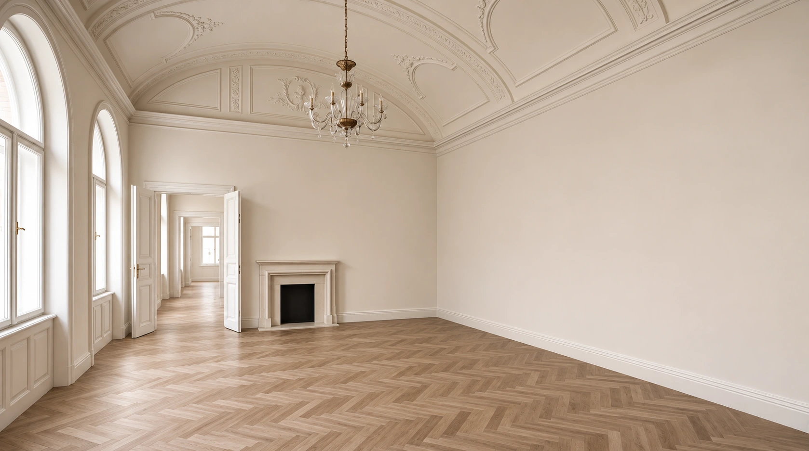
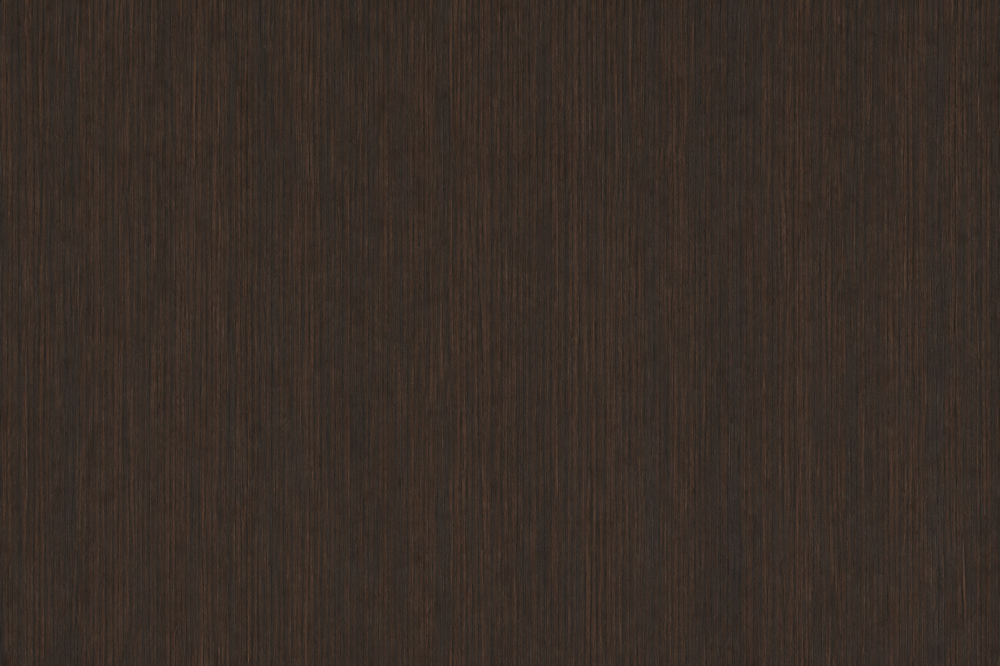
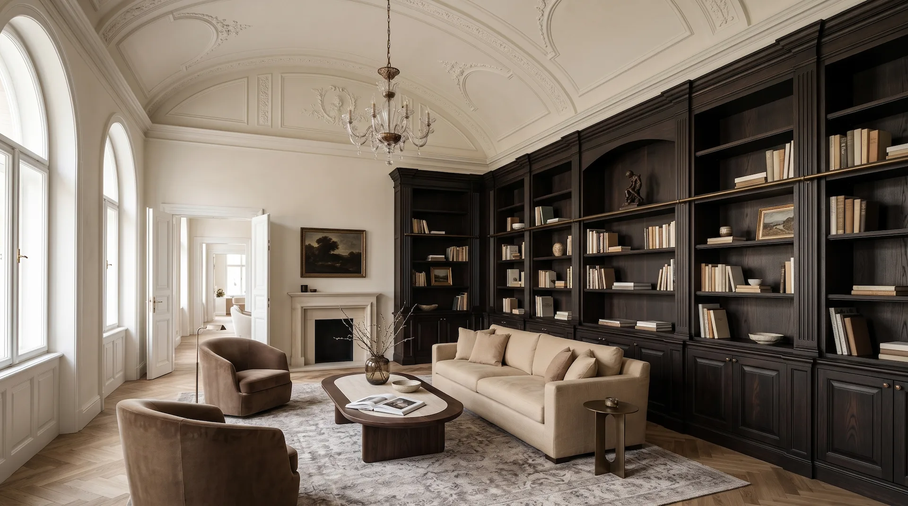

Holešovice Library
A fitted library for books, objects and everyday living.


Storage that gives the room its rhythm.
The library combines practical storage with space to display books and objects. Its proportions are considered in relation to the surrounding room and the furniture within it.
Shelf spacing, closed storage and display areas are developed around what needs to be kept. Finish samples help establish the right relationship between the joinery and the interior.
- Space
- Other furniture
- Location
- Praha · Holešovice
- Made to measure
- Design · Craft · Installation
Materials & finishes
Two finishes focused on the library itself: dark timber cabinetry and warm metal handles. Colours reflect the project photograph; exact material specifications are confirmed separately.
Finishes · photographic samples

Dark timber finish
Smooth dark wood grain · illustrative finish sample
Handle metal finish
Warm antique-toned metal matching the cabinet knobs
Colour palette · sampled from the image
Fixtures & fittings · photo details
Cabinet pulls
The visible opening points of the lower doors
Shelf junction
Actual shelves, dividers and backing
Panelled doors
Close view of the lower cabinet profiles
Library cornice
The upper moulding of the timber framework
Considered details
Explore the surfaces, junctions and small decisions that shape the finished piece.

Shelving bays
Vertical divisions and book storage
Lower cabinetry
Panelled doors and warm metal pulls
Fluted uprights
Vertical timber profiles and carefully joined shelves